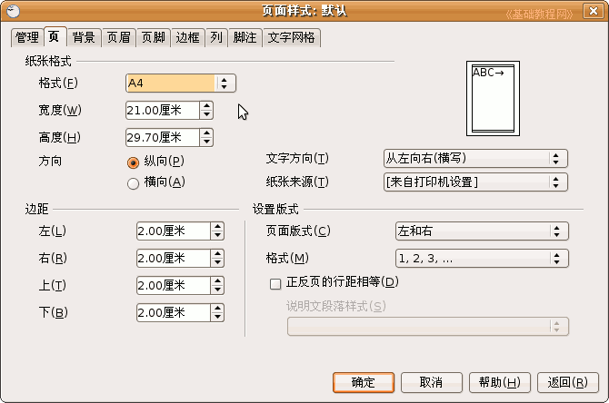
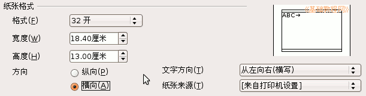
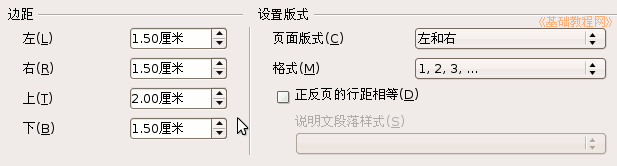
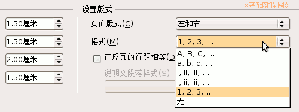
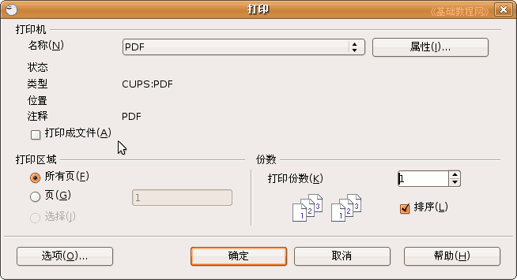

OpenOffice.org 教程之 Writer 文字处理
作者：TeliuTe 来源：基础教程网
十、页面设置和打印 返回目录打印之前需要根据纸张设置一下页面，包括纸张大小、页边距、打印方向等等，下面我们来看一个练习；
1、纸张格式
1）启动Writer，打开上次保存的“页眉页脚”；
2）点菜单“格式－页面”命令，打开一个对话框；

默认有纸张格式、边距和版式格式，可以分别进行不同的设置；
3）在上面的纸张格式里点击“A4”，在出来的下拉列表中选择“32开”，把方向设为“横向”，

纸张下面的大小也可以自己设定，方向可以在右边看到预览的样式，大多数情况用纵向排列，横向常常用在分两栏的情况，不管横向、纵向，打印机的纸张一般都是纵向放进去的；
2、边距和版式
1）边距是纸张四周留出的空白，如果你想多打印些文字，就可以减小页边距，从而节省纸张；
2）默认的边距是2厘米，把左、右、下边距都改成1.5厘米，这样正文的区域就增大了一些；

3）版式格式中主要是对单数页面和偶数页面的设置，
下面的格式中可以设置页码的样式，保存一下文件；

3、打印
1）使用打印功能，需要安装一个打印机，如果你没有打印机设备，系统中有一个虚拟的PDF文件打印；
2）点菜单“文件－打印”，出现打印对话框；

3）默认的是全部打印，如果你只想打印某一页，可以在“打印区域”里选择一页，也可以输入页码范围，如2-3；
4）选好后单击“确定”即可开始打印，简单的打印，可以直接点击工具栏中的打印图标，直接打印所有页面；
本节学习了页面设置和打印的基本操作，如果你成功地完成了练习，请继续学习；
本教程由86团学校TeliuTe制作|著作权所有
基础教程网：http://teliute.org
美丽的校园……
转载和引用本站内容，请保留作者和本站链接。